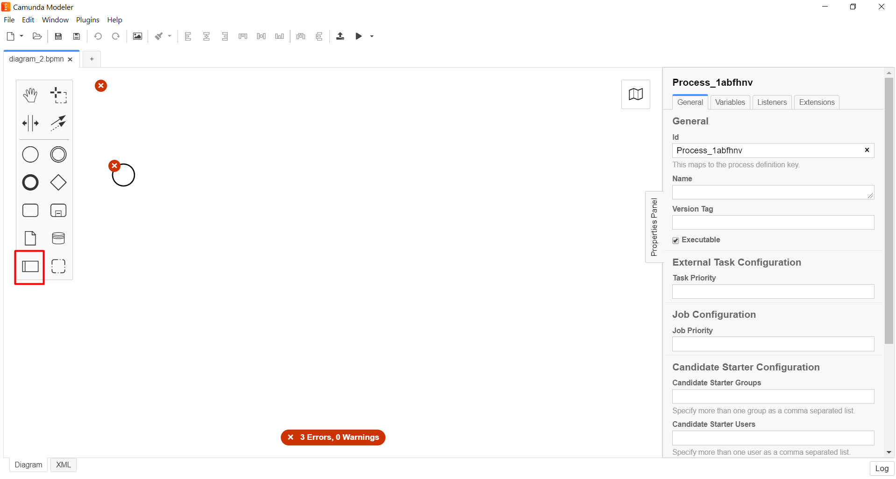
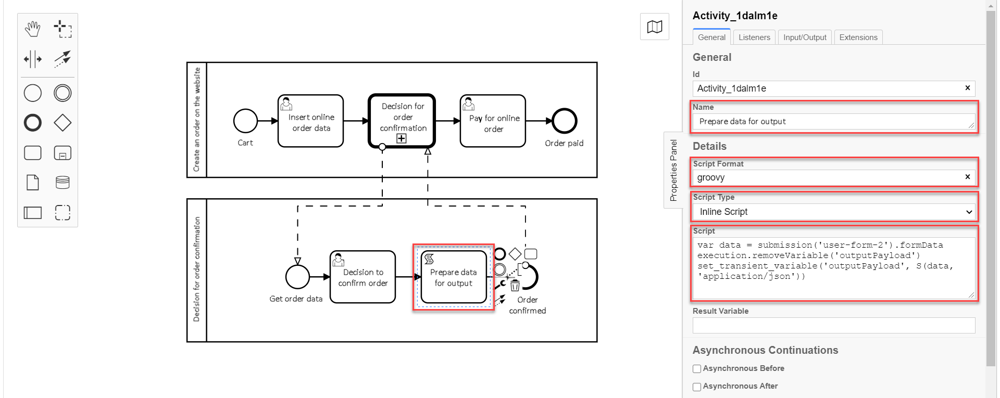

Call activity
- 1. Overview
- 2. Types of Call Activity element template extensions
- 3. Modelling business processes using Call Activity extensions
- 3.1. Process modelling stages
- 3.2. Creating parent process pool
- 3.3. Modelling start event of the parent process
- 3.4. Modelling the user task for entering online order data
- 3.5. Modelling Call Activity to call external subprocess
- 3.6. Creating a pool for the global subprocess
- 3.7. Modelling start event for the global subprocess
- 3.8. Modelling the "Decision for order confirmation" user task
- 3.9. Modelling the script task to prepare the data for output
- 3.10. Modelling global subprocess end event
- 3.11. Modelling the user task for order payment
- 3.12. Modelling main process end event
- 4. Restricting nesting levels when calling subprocesses with Call Activity
- 5. Displaying business processes in user Portals
1. Overview
Call Activity — is a standard BPMN-modelling element supported by Camunda Engine. It allows you to call another process as part of the currently running process. Call Activity is similarl to embedded subprocess, but is external, meaning it’s modelled within a separate business process pool, and can be used multiple times by different Parent[1] business processes.
|
In Camunda BPMN the calling of global (external) subprocess can be executed between processes modelled in separate .bpmn files, or within a single .bpmn file. This way an independent business process can start another one, and vice versa, The registry platform currently supports only one type — calling a global subprocess from a Parent process. From a global subprocess you can execute the Call Activity — a subprocess of the 2nd level (see ref:#restrictions[]). Example. Calling between processes, modelled in separate BPMN files
Example. Calling between processes, modelled in one BPMN file.
|
When Call Activity element is brought into action, a new instance is created for the process the element is linked to. The new instance is activated during none start[2] event. The process can have start events of other types, but they are ignored.
|
When the created instance is ended, the call action is stopped, and the sequence flow continues. In other words, when Call Activity is executed, the process that initiated the call awaits the end of the global subprocess, and continues after that. |
2. Types of Call Activity element template extensions
To simplify business process modelling within the registry Platform, a number of extension (delegate) types that are configured using the developed Call Activity element templates, were implemented:
-
Call Activity — general template for global subprocess call.
-
Check excerpt status — specialized template for the calling of check excerpt status subprocess.
| We differentiate Call Activity as a BPMN element and Call Activity as this element’s extension that is configured using the callActivity.json developed template, used to call the global subprocess. |
3. Modelling business processes using Call Activity extensions
Let’s look at the application of Call Activity BPMN-element using callActivity.json developed template-extension to call global subprocesses on the example of online order processing business processes (further in the text — main or parent process) and confirmation of the order (further in the text — subprocess).
|
On the modelling stage it is required to create 2 business process pools and save them within one .bpmn file. |
3.1. Process modelling stages
To model 2 processes (the parent process and the global subprocess in our case) using Call Activity, we need to go through the following stages:
3.2. Creating parent process pool
To model a pool for the parent process, take the following steps:
| Parent process pool modelling must be performed within the Create Pool/Participant element. |
-
Open Camunda Modeler and create a new BPMN diagram by clicking File menu → New File → BPMN Diagram.

-
On the left panel, find Create pool/Participant and drag it onto the modelling canvas.

-
Fill in the fields with the corresponding values:
-
In the
Participant Namefield, enter the name for the pool —Creating an order on the website. -
In the
Process identer business process ID —create-order. -
In the
Process Namefield enter process name —Creating an order on the website.
3.3. Modelling start event of the parent process
To model a start event, take the following steps:
-
On the left panel, find the CreateStartEvent and drag it onto the modelling canvas.
-
On the right panel, fill in the following parameters with the corresponding values:
-
In the
Namefield, enter the name for the start event —Cart; -
In the
Initiatorfield, enterinitiator.
initiator— is a special variable set for the user who started the process.+
-
3.4. Modelling the user task for entering online order data
To create a user task for data entering, take the following steps:
-
Create a new task, define its type by clicking the key icon and selecting User Task from the menu.
-
On the right panel, click
Open Catalog, select User Form template, and clickApplyto confirm. -
On the right panel, fill in the following fields:
-
In the
Idfield, set task ID —user-form-1.Task ID is automatically set by default. Enter it manually if required.
-
In the
Namefield, enter task name —Order data form. -
In the
Form keyfield, enter form key that will correspond with the form service name —add-order-bp-add-order-test. -
In the
Assigneefield, enter the variable of the user who initiated the process instance —${initiator}.
3.5. Modelling Call Activity to call external subprocess
To model Call Activity, take the following steps:
| You can find an example of Call Activity delegate configuration here. |
-
Create Call Activity element.
-
Perform the following configurations:
-
In the
Namefield, enter element name —Decision on order confirmation. -
In the
Called Elementfield, set the ID of the global subprocess to be called —order-confirm. -
In the
Input datafield, set the input data to be sent to the called business process. The parameters must be transferred in the form of key-value pairs (here —${submission('user-form-1').formData}).You can find more detauls on using the submission()function on the following page: registry-develop:bp-modeling/bp/modeling-facilitation/modelling-with-juel-functions.adoc.
-
In the
Output variable nameset the payload-carrying variable name (here —callActivityOutput).
| This way the current configuration starts a global subprocess from the main pool. The main process can’t end while the global subprocess is running. |
3.6. Creating a pool for the global subprocess
Model a pool for the global subprocess as shown in the example Creating parent process pool.
-
On the left panel, find the Create pool/Participant element and drag it to the modelling canvas.
-
Fill in the following fields with the corresponding values:
-
In the
Participant Namefield, enter the name of the pool displayed in the modeller —Decision on order confirmation. -
In the
Process idfield, enter business process ID —order-confirm. -
In the
Process Namefield, enter business process name —Decision on order confirmation.
3.7. Modelling start event for the global subprocess
Model a start event for the global subprocess as shown in the example Modelling start event of the parent process.
To do that, take the following steps:
-
On the left panel, find the CreateStartEvent element and drag it to the modelling canvas.
-
On the right panel, fill in the following parameters with the corresponding values:
-
In the
Namefield, enter the name of the start event —Receiving order data. -
In the
Initiatorfield, enterinitiator.initiator— is a special variable set for the user who started the process.
-
3.8. Modelling the "Decision for order confirmation" user task
Create the "Decision for order confirmation" user task based on the example Modelling the user task for entering online order data, by taking the following steps:
-
Create a new task, define its type by clicking the key icon and selecting User Task from the menu.
-
On the right panel, click
Open Catalog, select User Form template, and clickApplyto confirm. -
On the right panel, fill in the following fields:
-
In the
Idfield, enter task ID —user-form-2.Task ID is automatically set by default. Enter it manually if required.
-
-
In the
Namefield, enter task name —Decision for order confirmation. -
In the
Form keyfield, enter form key that will correspond with the form service name —add-order-bp-order-confirm-test. -
In the
Assigneefield, enter the variable of the user who initiated the process instance —${initiator}.
3.9. Modelling the script task to prepare the data for output
Create a script task for data processing and preparation for output.
|
The task purpose is to take the data that the user filled in the form, using groovy-script with |
-
Create a new task, define its type by clicking the key icon and selecting Script Task from the menu.
-
On the right panel, fill in the following fields:
-
In the
Namefield, enter task name —Preparing data for output -
In the
Script Formatfield, enter script format —groovy. -
In the
Script Typefield, enter script type —Inline Script. -
In the
Scriptfield, enter the groovy-script:var data = submission('user-form-2').formData execution.removeVariable('outputPayload') set_transient_variable('outputPayload', S(data, 'application/json'))
3.10. Modelling global subprocess end event
-
Create a business process end event.
-
On the right panel, set the
Nameparameter toOrder confirmed.
The data received as a result of the "Decision for order confirmation" global subprocess execution are written into the callActivityOutput variable, defined in the Output variable name field when modelling Call Activity of the main process, and can be used on the order payment form in the main process. After that, the main process execution continues.
|
3.11. Modelling the user task for order payment
Create the user task for order payment based on the example Modelling the user task for entering online order data, by taking the following steps:
-
Create a new task, define its type by clicking the key icon and selecting User Task from the menu.
-
On the right panel, click
Open Catalog, select User Form template, and clickApplyto confirm. -
On the right panel, fill in the following fields:
-
In the
Namefield, enter task name —Order payment. -
In the
Form keyfield, enter form key that will correspond with the form service name —add-order-bp-view-order-test. -
In the
Assigneefield, enter the variable of the user who initiated the process instance —${initiator}.
3.12. Modelling main process end event
-
Create the business process end event.
-
On the right panel, fill in
Nameparameter withOrder paid.
4. Restricting nesting levels when calling subprocesses with Call Activity
The Platform has certain restrictions on how many nesting levels are allowed for business processes during the calling of global subprocesses with Call Activity.
|
For proper calling of global subprocesses with Call Activity functionality operation, use no more than 3 nesting levels for bysiness processes. This means: main process, global subprocess of the 1st level, and global subprocess of the 2nd level. |
5. Displaying business processes in user Portals
Users of Officer and Citizen Portals will see only the names of parent business processes of the highest level on My services and My tasks pages during the execution of called or in-built subprocesses.
If business process A called subprocess B, and subprocess B called subprocess C, the user will only see business process A name in the Portal.